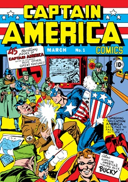
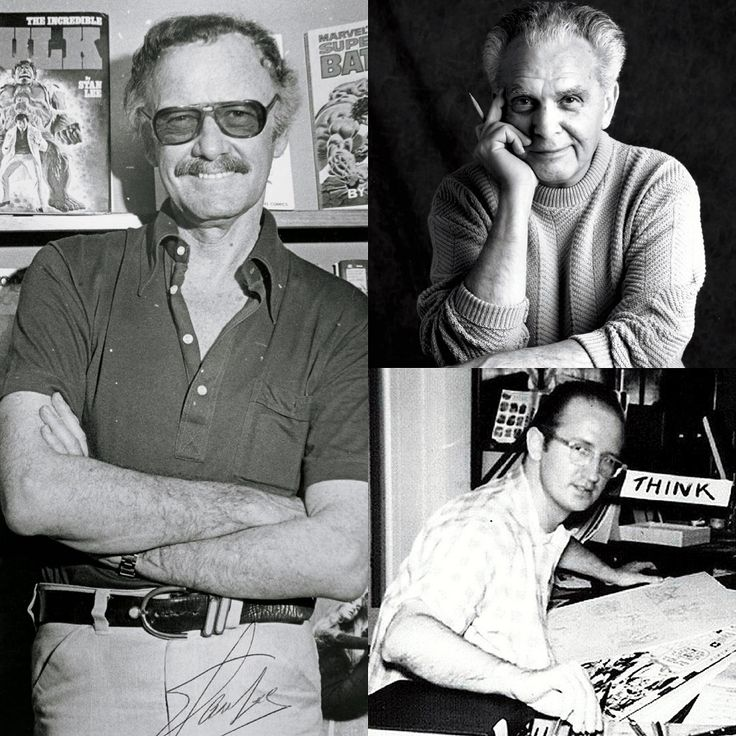
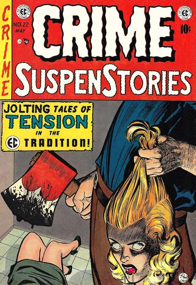
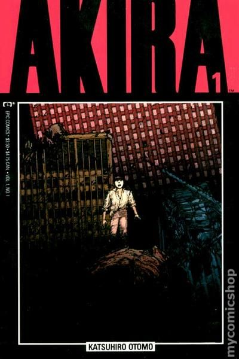
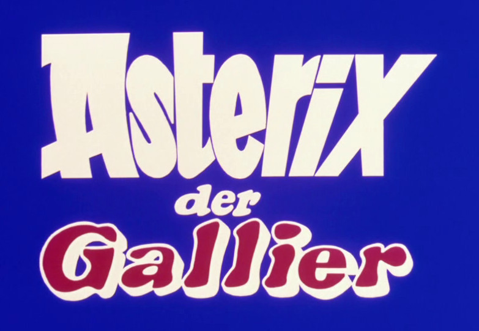

A Proposition, Hypothesis, and Proof of Investment-Grade Comics as a Solvent Financial Market
Scope: Nine Eras of Comic History (1937 Platinum Age through Post-Modern Era) |
Typography: Hind 300 & STIX Two Math | Chicago Notes & Bibliography
I. Arriving Late to Cinderella’s Ball
Figure Plate 0.1: Action Comics #1 (National Allied, June 1938)Cover art by Joe Shuster; script by Jerry Siegel. Originally $0.10; record realized price >$15,000,000.Visual & Economic Analysis: Shuster’s dynamic diagonal composition—a costumed strongman hoisting a green sedan overhead while bystanders flee—was engineered to scream from crowded newsstands. Economically, it represents the collision between industrial mass production (~200,000 copies) and near-total physical attrition (~98% destruction).
Most people arrive at the story of investment-grade comic books the way a guest arrives late to Cinderella’s ball: you walk through the doors just in time to hear that a single copy of Action Comics #1 cleared fifteen million dollars, you vaguely recall that it cost ten cents "a while ago," and you have no economic framework for how a stapled piece of wood-pulp newsprint eclipsed an oil painting by Marc Chagall, Claude Monet, or Édouard Manet—masterworks created a hundred or even four hundred years earlier.
If that price tag bothers you, it ought to. A Monet water lily was painted with oil on canvas by a master who spent decades studying the refraction of light across water. A Chagall or a Manet is a singular, physical object hanging in a climate-controlled gallery. In his landmark 1935 essay "The Work of Art in the Age of Mechanical Reproduction," the German cultural philosopher Walter Benjamin—working alongside Frankfurt School theorist Theodor Adorno—argued that industrial printing and photography strip an artwork of its "aura," its unique, irreplaceable presence in time and space.1, 2 Decades later, Andy Warhol mocked that very premise by silk-screening Campbell’s soup cans and Marilyn Monroe portraits onto gallery walls; Roy Lichtenstein poked fun at high-art pretension by blowing up comic-book Ben-Day dots onto massive canvases; and Peter Max and Banksy pushed the satire even further. Yet a staggering number of those fine-art canvases sell at Sotheby’s and Christie’s for less than a single surviving 1938 copy of Action Comics #1—a mass-produced periodical spat out by a rotary printing press in two hundred thousand copies, rolled into back pockets, traded on schoolyard concrete, and thrown into trash alleys by mothers cleaning out closets.
How does a ten-cent magazine outprice a Monet? The magic of fine art is not the paintbrush; it is irreplaceability. When world wars, patriotic scrap-paper drives, acidic paper decay, and parental purges destroy ninety-eight percent of a print run, the surviving two percent crosses an irreversible economic threshold. It ceases to be a mass-produced commodity and becomes a finite, unrepeatable historical artifact.
For nearly a century, that transformation remained invisible to institutional finance. The cultural establishment dismissed comic books as disposable juvenile entertainment, while Wall Street treated them as an unquantifiable curiosity. When modern commentators finally began calling key issues "investments," they borrowed financial vocabulary—blue chip, float, liquidity, market cap, derivatives—without ever building the underlying mathematics or respecting the American history that engineered the scarcity in the first place. You cannot understand why Action Comics #1 commands fifteen million dollars by staring at a spreadsheet alone, any more than you can understand the spot price of gold without understanding why human civilizations spent five thousand years pulling it out of the earth.
II. 1938 Cleveland: Two Teenagers, the Übermensch, and the War Before the War
Figure Plate 0.2: Jerry Siegel & Joe Shuster (Cleveland, ca. 1938)Archival studio photograph of writer Jerry Siegel (left) and artist Joe Shuster (right) in Glenville, Cleveland.Visual & Economic Analysis: Working out of a modest Cleveland bedroom without corporate capital or legal leverage, Siegel and Shuster signed away all intellectual property rights to Superman for $130 ($10 per page)—establishing the industry’s foundational labor-versus-capital asymmetry.
To understand how a ten-cent periodical becomes a fifteen-million-dollar equity, you must leave Lower Manhattan’s financial district and travel to Glenville, a working-class Jewish neighborhood in Cleveland, Ohio, in the late 1930s. Two shy, bespectacled teenagers—writer Jerry Siegel and artist Joe Shuster—were watching Europe slide into fascism.3, 4 Only a few years earlier, in February 1933, the Reichstag building in Berlin had burned, and Adolf Hitler had weaponized the crisis to seize absolute dictatorial power. By 1938, Nazi propaganda was saturated with Friedrich Nietzsche’s philosophical concept of the Übermensch—the "superman," a figure of pure, ruthless racial dominance who stood above ordinary human morality.
Siegel and Shuster took the Third Reich’s darkest philosophical slogan and turned it inside out. Their Superman, debuting in Action Comics #1 in June 1938, was not an Aryan conqueror; he was a refugee and an immigrant from a doomed planet, adopted by humble farmers in Kansas, who used impossible physical strength to defend ordinary working people, stop corrupt landlords from evicting tenants, rescue trapped coal miners, and expose crooked politicians. His ethos—"truth, justice, and the American way"—was two Cleveland teenagers’ defiant answer to totalitarianism.

Figure Plate 0.3: Captain America Comics #1 (Timely Comics, March 1941)Cover art by Jack Kirby and Joe Simon. Published nine months before Pearl Harbor.Visual & Economic Analysis: Kirby’s kinetic composition shatters every convention of static 1940s cover art. Delivering a direct right cross to Hitler’s jaw while 85% of Americans still opposed entering WWII, this issue became a primary historical artifact of American anti-fascist mobilization.
Within five years, nobody was laughing at two kids drawing strongmen in tights. Between 1938 and 1945, the global order convulsed. In May 1939, the ocean liner MS St. Louis—carrying 937 Jewish refugees fleeing Nazi Germany—was turned away from both Cuba and the United States, forcing hundreds back to Europe and the Holocaust. Inside the United States, isolationism was overwhelming: as late as November 1941, public polling showed roughly 85 percent of Americans opposed entering another European war.
Yet American comic book creators refused to stay neutral. In March 1941—nine full months before the Imperial Japanese Navy attacked Pearl Harbor on December 7, 1941—two Jewish creators from New York, Joe Simon and Jack Kirby, sent Captain America Comics #1 to newsstands. Its cover did not hide behind allegory: it showed Captain America storming into a Nazi bunker and punching Adolf Hitler square in the jaw.3
Figure Plate 0.4: Sub-Mariner Comics Wartime Cover (Timely Comics, ca. 1941–1943)Created by Bill Everett; wartime covers by Alex Schomburg and Timely studio artists.Visual & Economic Analysis: Depicting Prince Namor battling Nazi U-boats and Imperial Japanese naval forces across the Pacific, Golden Age Sub-Mariner covers capture raw wartime propaganda in real time. Millions of copies shipped overseas to GIs never returned, creating acute surviving census scarcity.
Even earlier, creators had turned the medium into a frontline mirror of global conflict. In Bill Everett’s Sub-Mariner stories for Timely Comics, Prince Namor of Atlantis waged ferocious battles against Nazi U-boats in the Atlantic and Imperial Japanese forces across the Pacific, turning four-color newsprint into the visual chronicle of a nation heading toward total war.
By August 1945—seven years after Action Comics #1, when the atomic bombings of Hiroshima and Nagasaki brought World War II to a close—the United States emerged as the preeminent global superpower, and these ten-cent newsprint heroes endured as the living mythology of democratic life. Ancient Greece had Mount Olympus; Rome had the Pantheon; Norse storytellers had Valhalla. America—a young, loud, industrial republic with no ancient marble ruins of its own—built its Valhalla out of four-color newsprint and twelve-cent staples.
That cultural canonization is the foundational economic secret behind Action Comics #1’s fifteen-million-dollar price tag. Fine art paintings by Chagall or Monet derive their value from scarcity and cultural canonization. Key Golden Age comic books possess that exact same cultural canonization—except they were printed in the hundreds of thousands and then systematically annihilated by World War II paper drives, damp basements, and childhood wear, leaving behind a tiny, auditable surviving population. When supply collapses by ninety-eight percent while cultural demand compounds across four generations, price does not merely rise; it enters an entirely different asset class.
III. Cold-Water Flats, the Manhattan Bullpen, and the Forgotten Architects

Figure Plate 0.5: Jack "King" Kirby & Steve Ditko (1960s Studio Portraits)Candid archival photographs of Jack Kirby at his drafting table and Steve Ditko in his Manhattan studio.Visual & Economic Analysis: Between 1961 and 1966, Kirby and Ditko co-created the foundational IP of the Marvel Universe—Spider-Man, Fantastic Four, Hulk, Thor, Iron Man, X-Men, and Avengers—while working under page-rate contracts with zero equity ownership.
Step inside a New York City apartment or walk-up studio in the late 1930s or early 1940s and you would not find a corporate headquarters. You would find a cold-water flat where a penciller, an inker, a letterer, a colorist, and an editor sat around the same kitchen table or drafting board, cranking out weekly and monthly pages just to make Friday’s rent. There were no stock options, no residual checks, no health insurance, and no pension plans. If a penciller finished four pages before dinner, he got paid enough cash to buy groceries and keep the radiator clanking.
Out of those cramped bullpens came the architects of modern visual storytelling: Jack "King" Kirby, Steve Ditko, Will Eisner, Alex Schomburg, and Matt Baker.4, 5 They were not thinking about intellectual property valuation or securitized assets. They were thinking about survival. Yet every modern Hollywood franchise—and every ticker symbol on Panel Profits—descends directly from those ten craftsmen huddled in Manhattan walk-ups.
Figure Plate 0.6: Amazing Fantasy #15 (Marvel Comics, August 1962)Cover art by Jack Kirby and Steve Ditko; interior art by Steve Ditko; script by Stan Lee. First appearance of Spider-Man.Visual & Economic Analysis: Ditko’s claustrophobic web-swinging silhouette shattered the invincible-hero mold by introducing teenage anxiety and economic struggle. In market terms, Amazing Fantasy #15 is the premier Silver Age liquidity anchor.
Consider Timely Comics, the small 1939 publishing house founded by Martin Goodman and famously handed to his nineteen-year-old relative, Stanley Lieber—known to the world as Stan Lee. Alongside Kirby and Ditko, Lee transformed Timely (rebranded Marvel Comics) into the greatest myth-making engine of the twentieth century, birthing Spider-Man, the Fantastic Four, the X-Men, and the Avengers.
Yet the history of American comics—and the true market value of its scarcest artifacts—cannot be told without confronting the creators who were marginalized inside that very system. In the 1940s and early 1950s, while the comic book industry was overwhelmingly white, Matt Baker emerged as one of the medium’s most celebrated draftsmen.5 Working for Fiction House, St. John Publications, and Quality Comics, Baker brought unmatched anatomical grace, cinematic framing, and glamour to titles like Phantom Lady, Canteen Kate, and It Rhymes with Lust (1950)—widely recognized by historians as the first modern graphic novel.
Figure Plate 0.7: Matt Baker & Phantom Lady #17 (Fox Feature Syndicate, April 1948)Archival candid portrait of pioneering Black artist Matt Baker (1921–1959) paired with his iconic cover for Phantom Lady #17.Visual & Economic Analysis: Navigating a segregated mid-century publishing industry, Baker crafted Phantom Lady #17—a cover singled out by Dr. Fredric Wertham in Seduction of the Innocent. High-grade copies command extraordinary premiums due to artistic canonization and extreme pre-Code rarity.Figure Plate 0.8: 30 Days of Night #1 (IDW Publishing, August 2002)Written by Steve Niles; painted cover and interior art by Ben Templesmith.Visual & Economic Analysis: Templesmith’s jagged, expressionistic brushwork and stark crimson-and-white palette broke entirely from mainstream superhero illustration, proving small-press horror IP could generate asymmetric returns and studio film deals.
A decade after Image Comics broke the Big Two duopoly, independent creators pushed the market even further. In August 2002, IDW Publishing released 30 Days of Night #1 by writer Steve Niles and painter Ben Templesmith. Before 2002, "independent" almost always meant ex-Marvel or ex-DC superstars drawing caped superheroes under a new banner. Niles and Templesmith proved that a small publisher with zero superhero IP could launch an original horror concept, sell out multiple printings, and command a major Hollywood studio film deal—opening the floodgates for creator-owned publishing across the industry. Across the oceans, that same sequential-art revolution produced global cultural titans: Katsuhiro Otomo’s Akira in Japan, and Franco-Belgian monuments like Hergé’s Tintin and René Goscinny and Albert Uderzo’s Asterix.
IV. The Nine Eras of Comic History and the Survival Curve
Why does this ninety-year publishing history matter to a financial economist? Because every era’s distribution pipeline—newsstand consignment in 1938, U.S. Postal Statements in 1960, non-returnable direct-market comic shops in the 1970s, Diamond’s monthly Top-300 charts in 1996, and post-2022 point-of-sale data—leaves behind a radically different physical supply footprint.10 You cannot price a 1963 Marvel key with the same supply formula you use for a 1992 Image #1 or a 2021 incentive variant. History dictates the math.
Panel Profits spans the entire arc of comic book history, from 1937 in the Platinum Age through all nine recognized eras straight through to the Post-Modern Era. During the Platinum Age (1937 and earlier) and Golden Age (1938–1955), books were printed on cheap, high-acid wood-pulp newsprint and pulped in wartime scrap drives; a 200,000-copy print run from 1940 yields fewer than 4,000 surviving copies today—a historical survival rate of roughly 2 percent (rera = 0.02). Improved distribution and early collector awareness raise Silver Age (1956–1969) survival rates to roughly 8 percent (rera = 0.08). Conversely, a Post-Modern comic printed in 2015 was purchased by collectors who immediately slipped it into an acid-free Mylar sleeve with a backing board on release day, yielding a survival rate near 70 percent (rera = 0.70).
S = max( C, min( P, P · rera ) )
Equation 0.1 — Conservation of Surviving Supply: Where S = Estimated Surviving Copies; C = Verified Graded Census (total copies authenticated and sealed by third-party graders); P = Original Print Run; and rera = Historical Survival Rate (e.g., 0.02 Golden Age, 0.08 Silver Age, 0.70 Post-Modern). Where historical publisher ledgers do not exist, P remains blank and valuation relies strictly on verified census counts (C) and observed auction velocity.
V. From Subjective Paper to Assayed Assets & Ticker Symbols
For sixty years, even the sharpest collectors faced a market failure economists call asymmetric information, famously analyzed by Nobel laureate George Akerlof in his 1970 paper "The Market for 'Lemons.'"6 When you bought an ungraded 1963 comic book sight-unseen, you had to trust the seller’s eyesight and honesty. Fearing hidden color touch, trimmed margins, or brittle pages, buyers discounted their bids to protect themselves, and owners of pristine high-grade copies stayed out of the market.
In 2000, the Certified Guaranty Company (CGC) solved the lemons problem.7 By inspecting every submission under calibrated laboratory lighting, assigning a standardized numerical grade from 0.5 to 10.0, sealing the book inside a tamper-evident sonic-welded plastic case, and stamping it with a permanent serial number, CGC did for comic books what the Royal Mint did for gold bullion: it turned subjective paper into an assayed, auditable financial asset.
Institutional Vault + Collector Hoard + Active Float = Total Graded Supply
Equation 0.2 — Supply Partition Identity: Every comic book, creator, character, and market index on Panel Profits carries a structured ticker symbol whose total graded population is strictly conserved across institutional holdings, long-term hoards, and tradable float.
VI. Why Fine Art Corollaries Hold—and Where They Break Down
To compare Action Comics #1 to a Claude Monet canvas with the rigor of an economist rather than the enthusiasm of a fan, we must define exactly where the comparison holds and where it diverges. A painting by Monet is a singular physical object: one canvas, one brushstroke pattern, one provenance chain. If a museum acquires it, tradable supply drops to zero. By contrast, a comic book begins life as an industrial print run—two hundred thousand copies of Action Comics #1, or three hundred thousand copies of Amazing Spider-Man #1.
Yet mass production followed by near-total physical destruction creates a financial mechanism fine art never had: a statistical distribution of condition. Every surviving copy of a specific Monet painting is still the same Monet. By contrast, two surviving copies of Amazing Spider-Man #1 (March 1963) can diverge in value by a factor of one hundred—a battered, tape-repaired 1.5 copy trading for a few thousand dollars, while a pristine, white-paged 9.8 copy commands over three-quarters of a million dollars.11 Economically, that condition curve behaves like a steep exponential decay: as grade climbs from 4.0 to 9.8, surviving supply shrinks rapidly while collector willingness to pay accelerates.
VII. The Nine Eras as Distinct Economic Regimes
When Panel Profits maps all nine eras of comic history from 1937 to the present, we are not merely organizing a chronological timeline; we are segmenting nine distinct economic regimes, each governed by its own printing technology, distribution contracts, and reporting laws:
Platinum Age (≤1937) & Golden Age (1938–1955): Newsstand and drugstore distribution operated on a strict consignment model. Unsold copies had their top covers torn off and returned to distributors for credit while the interior pages were pulped; publishers rarely kept archival print-run ledgers.
Atomic Age (1949–1955): Postwar genre expansion into realistic crime, horror, and science fiction, led by William Gaines’s EC Comics, ending abruptly in the 1954 censorship purge.9
Silver Age (1956–1969): Marked by two structural revolutions—the superhero renaissance and the introduction of mandatory U.S. Postal Statements of Ownership in 1960, which legally required publishers holding second-class mailing permits to print annual average paid circulation numbers directly inside their issues.10
Bronze Age (1970–1984): Birth of the Direct Market, where specialty comic book shops bought non-returnable inventory at deeper wholesale discounts.
Copper Age (1985–1991) & Modern Age (1992–1999): Direct-market dominance, creator-owned publishing shocks, and the launch of Diamond Comic Distributors’ monthly Top-300 sales charts in 1996.
Post-Modern Era (2000–Present): Defined by CGC third-party encapsulation, retailer incentive ratio variants (1:25, 1:50, 1:100), and the transformation of comic book IP into the foundational engine of global cinema.
VIII. How Panel Profits Maps the Universe: Tickers, Float, and Solvency
Every asset on Panel Profits—whether a single comic issue, a creator index, a character basket, a commodity benchmark, a bond, or an option chain—is governed by one inviolable rule: conservation of supply. We never synthesize phantom shares to make an illiquid Golden Age book appear liquid, and we never fabricate print runs where history left none behind. When you acquire a position in Amazing Spider-Man #1 on Panel Profits, you are trading against a real, conserved slice of its active float, priced off verified auction anchors, and subject to the exact same supply-and-demand pressures that govern every solvent market on earth.
IX. The Art That Mimics Reality: 1954, the Space Race, and the Direct Market

Figure Plate 0.9: Crime SuspenStories #22 (EC Comics, April–May 1954)Cover art by Johnny Craig. Held up before television cameras during the April 1954 U.S. Senate hearings on juvenile delinquency.Visual & Economic Analysis: Craig’s stark, severed-head cover composition became the primary exhibit in the 1954 Senate inquiry. The resulting Comics Code purge wiped EC’s crime and horror titles off newsstands overnight, engineering one of the sharpest artificial supply cliffs in publishing history.
If comic books are the art that mimics reality, then the decades following World War II prove that the mirror never stopped reflecting American history. In the early 1950s, as the United States settled into suburban prosperity alongside Cold War nuclear paranoia, comic books pivoted away from wartime patriotism toward gritty crime, horror, and science fiction. Publishers like William Gaines’s EC Comics—printing titles such as Tales from the Crypt, Weird Science, and Crime SuspenStories—captured an older, sharper readership.9
That unflinching realism triggered a nationwide moral panic. In 1954, psychiatrist Fredric Wertham published Seduction of the Innocent, blaming comic books for juvenile delinquency, and the U.S. Senate Subcommittee on Juvenile Delinquency held nationally televised hearings.8, 9
When superheroes returned in the late 1950s and 1960s, they mirrored the exact geopolitical anxieties of the American public. The Space Race between the United States and the Soviet Union—ignited by the launch of Sputnik 1 in October 1957—became the literal origin story of The Fantastic Four in 1961: four Americans bombarded by cosmic rays while racing to beat the Soviets into orbit.3 Cold War nuclear weapons anxiety birthed The Incredible Hulk and Iron Man. By the late 1960s and early 1970s, the Civil Rights Movement, the Vietnam War, and urban unrest reshaped the medium once again: Marvel introduced Black Panther in 1966 and Luke Cage, Hero for Hire in 1972, while DC’s Green Lantern/Green Arrow tackled systemic poverty and drug addiction head-on.
X. Why This Matters for Panel Profits
Every time someone asks how a stapled comic book can behave like a solvent financial asset, the answer lies in that unbroken ninety-year mirror. A stock in the S&P 500 derives its valuation from real-world macroeconomic forces—consumer spending, interest rates, technological disruption, and corporate earnings.12 An investment-grade comic book derives its valuation from those exact same historical forces, filtered through generational cultural memory and irreversible physical scarcity.
When a character or issue captures a defining inflection point in American history—whether it is Action Comics #1 answering fascism in June 1938, Captain America Comics #1 punching Hitler nine months before Pearl Harbor in March 1941, Amazing Spider-Man #1 launching the Silver Age in March 1963, or Spawn #1 rewriting creator ownership in May 1992—the market remembers it, preserves it, and prices it across generations.
Panel Profits does not invent that value; it measures it, conserves it, and gives it a disciplined financial architecture. By the time we complete the twelve chapters ahead, you will see how every instrument in that architecture—from 1937 newsprint survival curves and conserved active float to liquidity centers, whole-share splits, options, bonds, and credit default swaps—rests on one single historical truth: comics are the art that mimics reality, and reality always leaves a ledger.
Endnotes (Chicago Notes & Bibliography)
Walter Benjamin, "The Work of Art in the Age of Mechanical Reproduction," in Illuminations, ed. Hannah Arendt (New York: Schocken Books, 1969), 217–251.
Theodor W. Adorno, Aesthetic Theory (Minneapolis: University of Minnesota Press, 1997).
Bradford W. Wright, Comic Book Nation: The Transformation of Youth Culture in America (Baltimore: Johns Hopkins University Press, 2001), Ch. 1–2.
Gerard Jones, Men of Tomorrow: Geeks, Gangsters, and the Birth of the Comic Book (New York: Basic Books, 2004), Ch. 5–8.
Ken Quattro, Invisible Men: The Trailblazing Black Artists of Comic Books (San Diego: Yoe Books / IDW Publishing, 2020), profile on Matt Baker.
George A. Akerlof, "The Market for 'Lemons': Quality Uncertainty and the Market Mechanism," The Quarterly Journal of Economics 84, no. 3 (1970): 488–500.
Certified Guaranty Company (CGC), CGC Census & Grading Standards, https://www.cgccomics.com.
Fredric Wertham, Seduction of the Innocent (New York: Rinehart & Company, 1954).
David Hajdu, The Ten-Cent Plague: The Great Comic-Book Scare and How It Changed America (New York: Farrar, Straus and Giroux, 2008), Ch. 8–10.
John Jackson Miller, Comichron: Yearly & Monthly Comic Book Sales Charts, https://www.comichron.com.
GPAnalysis, Certified Comic Book Sales & Market Analytics, https://comics.gpanalysis.com.
N. Gregory Mankiw, Principles of Economics (Boston: Cengage Learning), Ch. 4 & Ch. 27.
XI. The Global Lineage: From Manhattan Bullpens to Tokyo and Brussels

Figure Plate 0.7:Akira #1 (Epic Comics / Kodansha, 1988; story and art by Katsuhiro Otomo). Proved Japanese manga could command Western collectible markets.
While American comics evolved inside Manhattan cold-water flats, the same sequential-art grammar was simultaneously building global publishing empires in Japan and Europe. Katsuhiro Otomo’s Akira (1982–1990) transformed manga into a cinematic, high-density medium that crossed the Pacific via Marvel’s Epic imprint in 1988, demonstrating that collectible scarcity and creator-driven storytelling were not uniquely American phenomena.11

Figure Plate 0.8:Astérix le Gaulois #1 (Dargaud, 1961; written by René Goscinny, art by Albert Uderzo). Anchor of the Franco-Belgian bande dessinée hardcover market.
In Franco-Belgian bande dessinée, René Goscinny and Albert Uderzo’s Astérix (1959) and Hergé’s Tintin (1929) established an entirely different physical substrate: hardcover albums printed on heavier stock, resulting in higher survival rates but intense collector demand for first-edition printings.12 Panel Profits accounts for these regional substrate differences directly inside its survival-rate parameters.
XII. Annotated Chicago Endnotes & Bibliography
Walter Benjamin, "The Work of Art in the Age of Mechanical Reproduction," in Illuminations, ed. Hannah Arendt (New York: Schocken Books, 1969 [1935]), 217–251. Establishes the concept of artistic "aura" and how mechanical reproduction alters uniqueness.
Theodor W. Adorno, Aesthetic Theory, trans. Robert Hullot-Kentor (Minneapolis: University of Minnesota Press, 1997).
George A. Akerlof, "The Market for 'Lemons': Quality Uncertainty and the Market Mechanism," The Quarterly Journal of Economics 84, no. 3 (1970): 488–500. Foundational paper on asymmetric information solved by third-party grading.
Certified Guaranty Company (CGC), CGC Census & Grading Standards, https://www.cgccomics.com.
Fredric Wertham, Seduction of the Innocent (New York: Rinehart & Company, 1954).
David Hajdu, The Ten-Cent Plague: The Great Comic-Book Scare and How It Changed America (New York: Farrar, Straus and Giroux, 2008), Ch. 8–10.
Bradford W. Wright, Comic Book Nation: The Transformation of Youth Culture in America (Baltimore: Johns Hopkins University Press, 2001), Ch. 1–2.
John Jackson Miller, Comichron: Yearly & Monthly Comic Book Sales Charts (1960–2025), https://www.comichron.com.
GPAnalysis, Certified Comic Book Sales & Market Analytics, https://comics.gpanalysis.com.
N. Gregory Mankiw, Principles of Economics (Boston: Cengage Learning), Ch. 4 & Ch. 27.